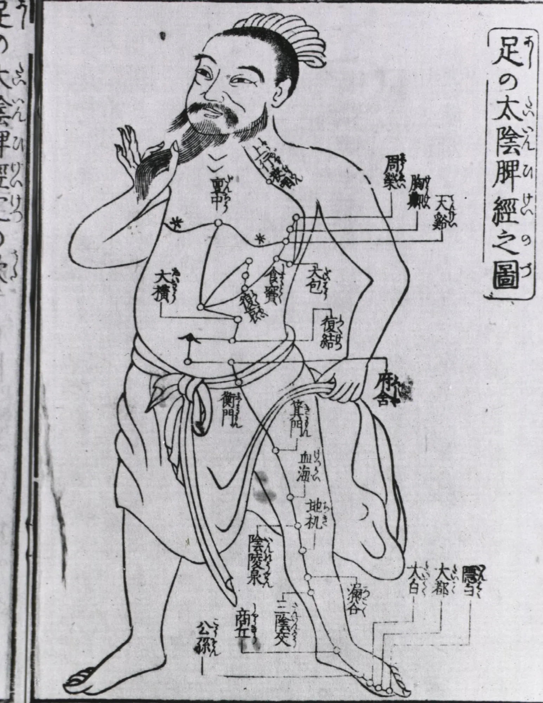

What Is Traditional Chinese Medicine?
TCM is not an alternative system. It is a complete, time-tested science of life — rooted in universal laws that govern energy, nature, and the human body.
Qi — The Intelligent Energy of Life
Everything is energy. When you break solid matter down into smaller and smaller portions, there is nothing solid or physical about it at all — it’s just invisible energy. Your body is no different.
“Qi has Power and Intelligence. It allows all things to communicate with each other and change at both visible and invisible levels.”
Qi is Life itself. Without it there can be no growth, no change. Your body cannot exist one second without Qi — it orchestrates every function, from temperature regulation to cellular repair, from emotional equilibrium to spiritual alignment.
The radical insight of TCM: nothing is unmovable, unworkable, or permanent. At the level of energy, nothing is impossible to heal. The limitations you experience in your health are not fixed — they are patterns of energy waiting to be shifted.
Yin & Yang — The Dance of Opposites
Everything contains Yin and Yang. They are two opposite yet complementary energies — interdependent, never separate. Nothing is absolute with Yin and Yang; the designation of something as Yin or Yang is always relative to something else.
“If you can understand Yin and Yang, you can hold the universe in your hands.” — Ancient TCM Text
In your body, Yang governs the exterior, back, head, function, and Qi. Yin governs the interior, front, structure, and blood. When these forces are balanced — you feel it. Life flows effortlessly. You don’t think about wellness because everything simply works.
When the balance tips, your body speaks through symptoms, food cravings, emotional patterns, and energy shifts. TCM decodes these messages precisely — and restores the balance at its root.
- Exterior / Back
- Head / Above waist
- Function / Movement
- Qi & energy
- Interior / Front
- Body / Below waist
- Structure / Rest
- Blood & fluids

Using the Visible to Enter the Invisible
To learn Qi Gong, you must learn Qi. But Qi is invisible — so study what is visible, the Mind, and let the visible lead you to the invisible.
Yang
Qi is a Circle
It has no beginning and no end — it flows, returns, and renews. It is life moving.
The Mind is a Line
It moves from A to B — projects, deadlines, outcomes. It always has an end.
Meridians — Your Body’s Invisible Highway System
Picture a road map: a profusion of points woven into a web by lines of travel. Now imagine this system three-dimensional inside your body — a vast network of invisible energy pathways connecting to every atom, cell, tendon, bone, organ, and centimeter of skin.
“They link the upper portion with the lower and the surface with the interior, so that nothing is truly separate. Your mind, emotions, and spirit — everything forms an intercommunicating whole.”
There are 12 major meridians, each corresponding to an internal organ. Energy and blood flow continuously through them — transmitting signals to regulate temperature, release water, balance emotions, and coordinate every organ function.
When meridians are blocked by stress, poor diet, or suppressed emotion, organ function suffers. Qigong, acupuncture, herbs, and healing foods restore that free flow — restoring health from the inside out.

Five Elements — Nature’s Blueprint for the Human Body
TCM’s Five Element framework is ancient and Universal. It organizes all natural phenomena into five master groups — each containing categories like season, direction, climate, organ, emotion, taste, color, and more. This is not metaphor. It is a diagnostic system for recognizing where imbalances in body, mind, emotions, and spirit originate.
“The Five Elements show us how the structures and systems in our bodies are connected — to each other, to our environment, and to the natural world.”
Understanding your Five Element pattern lets you decode every craving, mood swing, physical sensation, and chronic symptom as precise information — pointing directly to the root of imbalance.

You
Five Major Organ Systems — Where Emotion Meets Body
Modern quantum science and the ancient teachings of Chinese medicine agree: everything is energy. Every organ correlates with an external element in nature — and with an emotional pattern within you. When you understand this map, your symptoms stop being random. They become precise diagnostic messages.